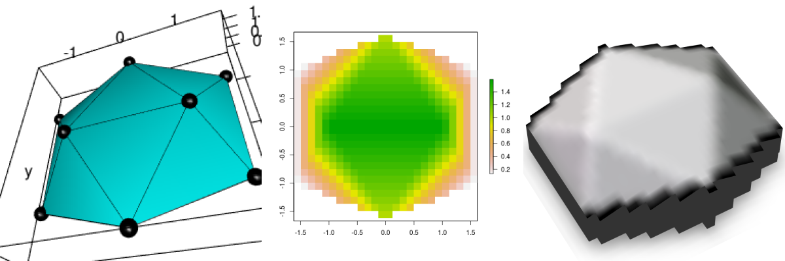
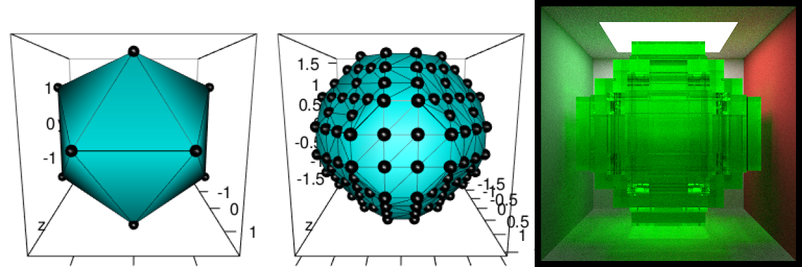

The goal of mesh2ray is to transform mesh3d to objects that can be used with ‘rayshader’ or ‘rayrender’.
The corresponding blog post is Play with mesh3d, rayshader and rayrender.
Transfrom mesh3d to raster and then {rayshader}
# Create simple mesh
simple_mesh_orig <- Rvcg::vcgIcosahedron()
# 1. Cut it with a plane with {Morpho}
v1 <- c(0, 0, -0.5)
v2 <- c(1, 0, -0.5)
v3 <- c(0, 1, -0.5)
simple_mesh <- Morpho::cutMeshPlane(simple_mesh_orig, v1, v2, v3)
# _plot3d
plot3d(simple_mesh, col = "cyan")
aspect3d(1, 1, 0.2)
plot3d(simple_mesh, type = "wire", add = TRUE)
plot3d(t(simple_mesh$vb), type = "s", radius = 0.1, add = TRUE)
view3d(theta = 20, phi = -40, zoom = 0.5, fov = 80)
# _snapshot
rgl.snapshot(filename = file.path(extraWD, "rayshader-simple-1-mesh.png"))
rgl::rgl.close()
# 2. Project on raster
simple_r <- mesh2ray::mesh_to_raster(simple_mesh, res = 26)
png(filename = file.path(extraWD, "rayshader-simple-2-raster.png"))
plot(simple_r)
dev.off()
# 3. raster to matrix
simple_ray <- mesh2ray::stack_to_ray(simple_r)
# 4. Rayshade matrix
zscale <- 0.4
ambmat <- ambient_shade(simple_ray$elevation, zscale = zscale)
raymat <- ray_shade(simple_ray$elevation, zscale = zscale, lambert = TRUE,
sunangle = 300)
ray_image <- simple_ray$elevation %>%
sphere_shade(texture = "unicorn") %>%
add_shadow(raymat, max_darken = 0.1) %>%
add_shadow(ambmat, max_darken = 0.5)
# _plot 3d
ray_image %>%
plot_3d(simple_ray$elevation, zscale = zscale, windowsize = c(1000, 1000),
soliddepth = -max(simple_ray$elevation, na.rm = TRUE)/zscale,
theta = -30, phi = 50, zoom = 0.7, fov = 20
)
# _snapshot
rgl.snapshot(filename = file.path(extraWD, "rayshader-simple-3-ray3d.png"))
rgl::rgl.close()
Transfrom mesh3d to regular mesh then {rayrender}
# Create simple mesh
simple_mesh <- Rvcg::vcgIcosahedron()
# _plot3d
plot3d(simple_mesh, col = "cyan")
aspect3d("iso")
plot3d(simple_mesh, type = "wire", add = TRUE)
plot3d(t(simple_mesh$vb), type = "s", radius = 0.1, add = TRUE)
view3d(theta = 0, phi = 10, zoom = 0.6, fov = 80)
# _snapshot
rgl.snapshot(filename = file.path(extraWD, "rayrender-simple-1-mesh.png"))
rgl::rgl.close()
# 1. Uniformely resample mesh
# _vcgUniformRemesh is included in mesh_to_cubes()
simple_resample <- vcgUniformRemesh(simple_mesh, voxelSize = 0.5, multiSample = TRUE,
discretize = TRUE)
plot3d(simple_resample, col = "cyan")
aspect3d("iso")
plot3d(simple_resample, type = "wire", add = TRUE)
plot3d(t(simple_resample$vb), type = "s", radius = 0.1, add = TRUE)
view3d(theta = 0, phi = 10, zoom = 0.6, fov = 80)
# _snapshot
rgl.snapshot(filename = file.path(extraWD, "rayrender-simple-2-regularmesh.png"))
rgl::rgl.close()
# 2. Calculate cube positions in a specific scene
# _vcgUniformRemesh is included in mesh_to_cubes()
simple_cubes <- mesh2ray::mesh_to_cubes(simple_mesh, voxelSize = 0.5, scene_dim = c(80, 475))
# 3. Draw with rayrender
# _scene
scene <- generate_cornell(lightintensity = 10)
# _add cubes on scene
scene <- mesh2ray::add_cubes_to_scene(scene, cubes = simple_cubes,
material = dielectric(color = "green"))
# _draw scene /!\ long calculation /!\
if (!file.exists(file.path(extraWD, "rayrender-simple-3-scene.png"))) {
options(cores = 4)
render_scene(scene, lookfrom = c(278, 278, -800) ,
lookat = c(278, 278, 0), fov = 40, ambient_light = FALSE,
samples = 500, parallel = TRUE, clamp_value = 5,
filename = file.path(extraWD, "rayrender-simple-3-scene.png"))
}
This package comes with a {pkgdown} documentation: https://statnmap.github.io/mesh2ray/
Please note that the ‘mesh2ray’ project is released with a Contributor Code of Conduct. By contributing to this project, you agree to abide by its terms.